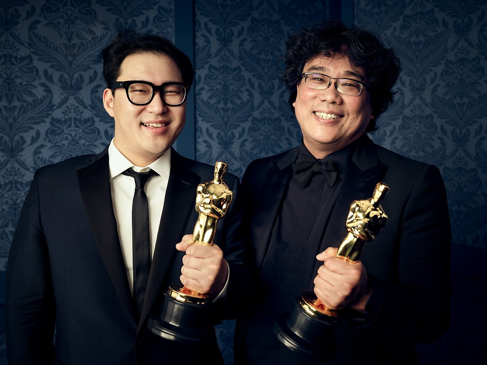

지난 10일(한국시간 기준), 제92회 아카데미 시상식에서 봉준호 감독이 <기생충>으로 4관왕의 쾌거를 이뤘다.
국내뿐만 아니라 전 세계 모든 영화인들이 환호했던 <기생충>의 수상. 그는 최초, 최초, 또 최초를 기록하며 한국
영화 역사에 길이 남을 족적을 새겼다. 수상의 여운이 쉽게 가실 수 없음은 물론이다. 이에 2020년 오스카 수상으로
인해 세운 봉준호 감독의 기록을 간결하게 정리해봤다.

1. 봉준호가 처음으로 거머쥔 아카데미 트로피는 ‘각본상’이었다.
이는 101년 한국 영화 역사상 최초의 아카데미 트로피다.
2. 아카데미가 시작한 이래로 92년 만에 아시아 영화가 처음으로 각본상을 수상한 것이다.
그뿐만 아니라 아시아계 작가가 각본상을 수상한 것도 최초다.
3. 수상이 확실시되었던 국제장편영화상은 각본상에 이은 2번째 수상이자 한국의 두 번째 아카데미 트로피였다.
이는 101년 한국 영화 역사상 최초의 아카데미 트로피다.
4. ‘국제장편영화상(Best International Feature Film)’ 명칭으로는 최초 수상이다. 수상 직후 봉준호
감독은 “영광이다. 이 카테고리의 명칭이 'Foreign Language Film (외국어영화상)'에서 'International
Feature Film(국제장편영화상)'으로 이름이 바뀌었는데, 이름 바뀐 첫 번째 상을 받게 되어서 더더욱 의미가 깊다”
라고 소감을 전했다.
5. 봉준호는 아시아 감독 중 두 번째로 아카데미 감독상을 수상했다. 첫 번째 감독상 수상자는 대만의 이안 감독이다.
이안 감독은 2006년 <브로크백 마운틴>, 2013년 <라이프 오브 파이>로 총 두 번의 감독상을 수상했다. 상의 순서로만
따지자면 세 번째인 셈.
7. 비(非) 영어권 영화로는 최초로 최우수작품상을 수상했다.
8. 국제장편영화상(옛 외국어영화상)과 최우수작품상을 동시에 수상한 것 역시 최초다.